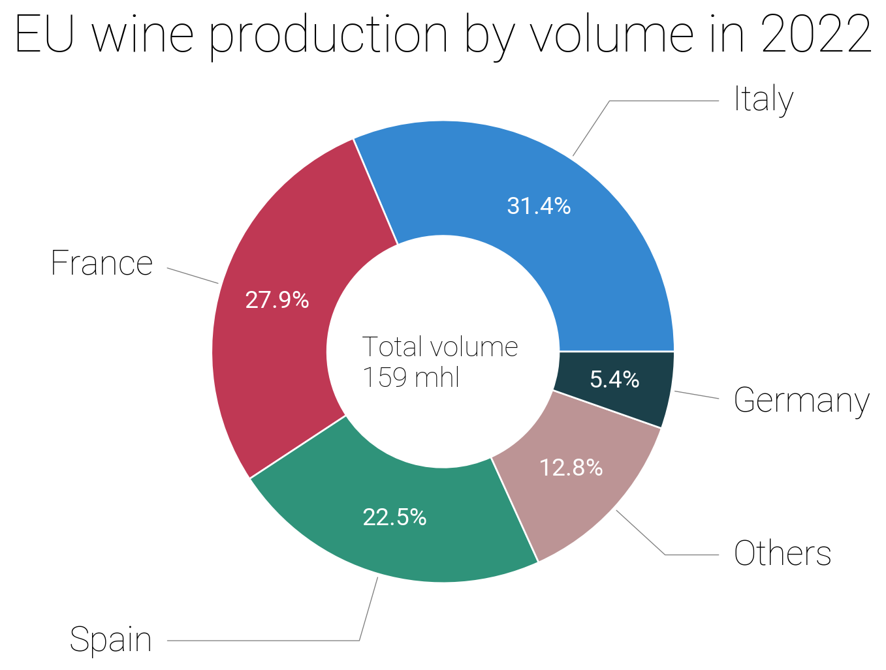

import numpy as np
import matplotlib.pyplot as plt
import pandas as pd
import matplotlib
import rasterio
import cartopy.crs as ccrs
import cartopy.feature as cf
import cartopy
import rioxarray
from rich import print as pprint
DATADIR = "../../../wine_analysis/data/"
# Use out custom matplotlib style
plt.style.use("../../analysis/setup/wine_analysis.mplstyle")
# Use some matplotlib helpers
import sys
sys.path.append("../../analysis/scripts/")
from matplotlib_extensions import *1.1 Introduction
Wine is one of the most widely enjoyed alcoholic beverages in the world. It carries a rich cultural heritage and a fascinating history that dates back thousands of years. Recent studies have shown that grapes were actually domesticated twice almost concurrently in western Asia and the Caucasus almost 11000 years ago(Dong et al. 2023). Early farmers that migrated from western Asia towards the Iberian peninisula brough with them the domesticated grapevines. These vines were in turn cross-bred with local varieties which created muscat grapes which were high in sugar. These were the earliest progenitors of the different grape varieties that are found today in many European wine-making regions. Grapes for wine making continued to be cultivated througout Europe and then spread across the globe. Today wine-making is a large industry, worth billions of euros in exports per year.
But it is notably dependent on the climate. Knowing how it will grow under expected, familiar conditions gives it the consistency necessary for industry. How and where has wine been made - and which kinds of wine - across Europe? How much can we expect in trade per year? And what will happen in future years, with the threat of climate change?
In this series of blogposts, we will look at many different aspects of wine production in Europe using the latest public datasets. In particular, we will follow the following roadmap (click to get more details):
Part I: Vineyards and wine production
In this part, we will explore where in Europe wine production takes place, as well as the volume of wine produced by different countries. We will also look into historical trends in wine production.
Part II: Wine export and consumption
In this part, we will look into the details of wine trade as well as trends in wine consumption.
Part III: Climate and wine
In this part, we will take a deep dive into what climactic factors affect wine and will examine their effects on historical data.
Part IV: Climate change and the future
We will conclude by taking a look what different state-of-the-art climate models predict for the coming decades and what implications this has for wine making.
1.2 Setting up the analysis environment
To perform this analysis, we will use Python and many of the standard data science packages written for it. In particular we will rely heavily on pandas and matplotlib. If you have not encountered these before it is highly recommended to get familiar with them first.
In order to ensure a reproducible analysis, we encourage people to use an isolated Python environment (a virtual environment). While there are many different ways of doing this, we recommend using conda/mamba since it also allows for convenient management of C dependencies. A detailed description of how to set up the environment can be found in Section 2.1.
Let’s load all the packages we need and set up some defaults (the matplotlib style file and additional analysis functions are here):
1.3 Wine production in Europe
1.3.1 Where is it?
The EU is the largest producer and exporter of wine in the world. Making and consuming wine is a long-held tradition in many European countries. Traditionally, this production has been mostly limited to southern parts of the EU where the conditions are optimal for growing different types of wine. Wine needs warm weather, lots of sun, and a fair amount of rain.
Our first goal is to map the modern location of European vineyards. To do this, we will of course need an extensive dataset of vineyard locations. While it’s possible to attempt to build such a dataset from scratch - starting for example from registration data for wineries in the EU - satellite land usage maps already provide a very complete data set. These surveys divide the surface of the Earth into a grid and classify the satellite data within each cell into different classes based on what the land is used for.
The Corine Land Cover (CLC) inventory is the largest database of land cover and land use available for Europe. The first release was 1990 and since then it has been updated several times: 2000, 2006, 2012, and the latest release in 2018. What makes the CLC particularly useful for us is that it explicitly separates vineyards from other types of agricultural use. CLC data is and available freely for research use. We’ll use the CLC 2018 dataset to create a map of wine production in Europe.
The data is available in three different formats: raster (GEOTiff), SQLite or ESRI database. For simplicity we use the GEOTiff raster format, which represents the data as values on a regularly-spaced grid. It comes with extensive documentation, including how to load and examine the data using the QGIS open-source application. See Section 2.2.1 for details on obtaining the data.
Before diving into the details, it is worth taking a quick look at the data inside the file. This can be done with gdalinfo, a command-line utility that comes as part of the GDAL library (it was installed as one of the dependencies in the mamba environment above). Executing the following:
gdalinfo ${DATADIR}/wine_statistics/u2018_clc2018_v2020_20u1_raster100m/DATA/u2018_clc2018_v2020_20u1_raster100m.tif | nlyields (we suppress some output for clarity but the line numbers correspond to what one would see)
1 Driver: GTiff/GeoTIFF
2 Files: ../../../data/wine_statistics/u2018_clc2018_v2020_20u1_raster100m/DATA/U2018_CLC2018_V2020_20u1.tif
3 ../../../data/wine_statistics/u2018_clc2018_v2020_20u1_raster100m/DATA/U2018_CLC2018_V2020_20u1.tif.ovr
4 ../../../data/wine_statistics/u2018_clc2018_v2020_20u1_raster100m/DATA/U2018_CLC2018_V2020_20u1.tif.aux.xml
15 Size is 65000, 46000
26 Coordinate System is:
7 PROJCRS["ETRS89-extended / LAEA Europe",
8 BASEGEOGCRS["ETRS89",
9 DATUM["European Terrestrial Reference System 1989",
10 ELLIPSOID["GRS 1980",6378137,298.257222101004,
11 LENGTHUNIT["metre",1]]],
12 PRIMEM["Greenwich",0,
13 ANGLEUNIT["degree",0.0174532925199433]],
14 ID["EPSG",4258]],
15 CONVERSION["Lambert Azimuthal Equal Area",
16 METHOD["Lambert Azimuthal Equal Area",
17 ID["EPSG",9820]],
18 PARAMETER["Latitude of natural origin",52,
19 ANGLEUNIT["degree",0.0174532925199433],
20 ID["EPSG",8801]],
21 PARAMETER["Longitude of natural origin",10,
22 ANGLEUNIT["degree",0.0174532925199433],
23 ID["EPSG",8802]],
24 PARAMETER["False easting",4321000,
25 LENGTHUNIT["metre",1],
26 ID["EPSG",8806]],
27 PARAMETER["False northing",3210000,
28 LENGTHUNIT["metre",1],
29 ID["EPSG",8807]]],
30 CS[Cartesian,2],
31 AXIS["(E)",east,
32 ORDER[1],
33 LENGTHUNIT["metre",1]],
34 AXIS["(N)",north,
35 ORDER[2],
36 LENGTHUNIT["metre",1]],
37 ID["EPSG",3035]]
[--------------------------------SNIP-----------------------------------------------------]
47 Corner Coordinates:
48 Upper Left ( 900000.000, 5500000.000) ( 56d30'18.51"W, 56d29' 4.75"N)
[--------------------------------SNIP-----------------------------------------------------]
353 Band 1 Block=128x128 Type=Int8, ColorInterp=Gray
54 Min=1.000 Max=48.000
55 Minimum=1.000, Maximum=48.000, Mean=25.753, StdDev=11.680
456 NoData Value=-128
[--------------------------------SNIP-----------------------------------------------------]- 1
- Line 5 : the data is on a \(65000\times46000\) grid, corresponding to a spatial resolution of 100 meters.
- 2
- Lines 6-35: detailed description of the coordinate system used to represent the spatial data, given in Well-known text (WKT) format. See this post for more information on coordinate systems frequently used in GIS.
- 3
-
Lines 53-54: the land use classes are encoded as integers of type
Int8with values ranging from 1 to 48. We will need to figure out what number corresponds to vineyards. - 4
- Line 56: missing values are indicated by -128.
Note
One should be careful when loading this data into any tool that treats all numerical values as float64 types, because while a \(65000\times46000\) array of Int8 occupies ~3 GB, the same array of float64 type would occupy 8 times more: ~24 GB.
xarray package provides a great way of interacting with this sort of data via xarray.DataArray which is a multi-dimensional labelled datatype. One can think of it either as a generalization of a multi-dimensional numpy array where more data about the dimensions is stored. There is also a package rioxarray which can load raster file types like GEOTiff directly into xarray objects:
# Get the data
dset = rioxarray.open_rasterio(
f"{DATADIR}/wine_statistics/u2018_clc2018_v2020_20u1_raster100m/DATA/U2018_CLC2018_V2020_20u1.tif"
)
dset<xarray.DataArray (band: 1, y: 46000, x: 65000)>
[2990000000 values with dtype=int8]
Coordinates:
* band (band) int64 1
* x (x) float64 9e+05 9.002e+05 9.002e+05 ... 7.4e+06 7.4e+06
* y (y) float64 5.5e+06 5.5e+06 5.5e+06 ... 9.002e+05 9e+05
spatial_ref int64 0
Attributes: (12/13)
AREA_OR_POINT: Area
DataType: Thematic
RepresentationType: THEMATIC
STATISTICS_COVARIANCES: 136.429646247598
STATISTICS_MAXIMUM: 48
STATISTICS_MEAN: 25.753373398066
... ...
STATISTICS_SKIPFACTORX: 1
STATISTICS_SKIPFACTORY: 1
STATISTICS_STDDEV: 11.680310194836
_FillValue: -128
scale_factor: 1.0
add_offset: 0.0Looking at the dataset, we see that the x and y coordinates represent the centers of the cells (you can easily tell this from: i) the shape of the data is the same as coordinates ii) the first x coordinate is actually 50 meters offset from the corner value we saw above ). Let’s convert the actual values to a 2D numpy array:
ar = dset.sel(band=1).to_numpy()Let’s verify that the data values are indeed what we expect:
pprint(np.unique(ar))[-128 1 2 3 4 5 6 7 8 9 10 11 12 13 14 15 16 17 18 19 20 21 22 23 24 25 26 27 28 29 30 31 32 33 34 35 36 37 38 39 40 41 42 43 44 48]
Now according to the official docs the designation class for vineyards is 221 so we need to find what value between 1 and 48 this corresponds to. A simple way is to just search for “221”, for example with grep -R "221" $DATADIR/wine_statistics/u2018_clc2018_v2020_20u1_raster100m/* immediately yields as one of the results:
clc_legend_qgis_raster.qml: <paletteEntry color="#e68000" label="221 - Vineyards" value="15" alpha="255"/>and thus the value we need is 15. Thus let’s find the indices of the cells which correspond to this value and then get the actual x-y coords
indices = np.where(ar == 15)
x = dset.x[indices[1]].to_numpy()
y = dset.y[indices[0]].to_numpy()Now, in order to make the map, we need to use the correct projection. We can easily obtain this information as follows:
geo_attrs = dset.spatial_ref.attrs
pprint(pd.Series(geo_attrs))crs_wkt PROJCS["ETRS89-extended / LAEA Europe",GEOGCS[... semi_major_axis 6378137.0 semi_minor_axis 6356752.31414 inverse_flattening 298.257222 reference_ellipsoid_name GRS 1980 longitude_of_prime_meridian 0.0 prime_meridian_name Greenwich geographic_crs_name ETRS89 horizontal_datum_name European Terrestrial Reference System 1989 projected_crs_name ETRS89-extended / LAEA Europe grid_mapping_name lambert_azimuthal_equal_area latitude_of_projection_origin 52.0 longitude_of_projection_origin 10.0 false_easting 4321000.0 false_northing 3210000.0 spatial_ref PROJCS["ETRS89-extended / LAEA Europe",GEOGCS[... GeoTransform 900000.0 100.0 0.0 5500000.0 0.0 -100.0 dtype: object
The next step is to create the cartopy transformation object so that we can convert the map of the countries from their default projection to the same projection as our raster dataset.
# Create a globe object with the same ellipsoid
globe = cartopy.crs.Globe(ellipse="GRS80")
# Create the correct projection
my_ccr = ccrs.LambertAzimuthalEqualArea(
central_longitude=geo_attrs["longitude_of_projection_origin"],
central_latitude=geo_attrs["latitude_of_projection_origin"],
false_easting=geo_attrs["false_easting"],
false_northing=geo_attrs["false_northing"],
globe=globe,
)Finally, we make the plot:
Show the code
plt.figure(figsize=(12, 8))
ax = plt.axes(projection=my_ccr)
# Resolution to use
resol = "50m"
# Country borders
bodr = cartopy.feature.NaturalEarthFeature(
category="cultural",
edgecolor="gray",
lw=0.5,
name="admin_0_boundary_lines_land",
scale=resol,
facecolor="none",
)
# Land, i.e. coastlines
land = cartopy.feature.NaturalEarthFeature(
"physical", "land", scale=resol, edgecolor="gray", lw=0.5, facecolor="#fad5b1"
)
# Ocean
ocean = cartopy.feature.NaturalEarthFeature(
"physical", "ocean", scale=resol, edgecolor="none", facecolor="#f0f8ff"
)
ax.add_feature(land, facecolor="#fad5b1", zorder=1)
# Note that ocean is broken for this projection so it fills the entire globe
# Thus we just make it a background
ax.add_feature(ocean, linewidth=0.2, zorder=-1)
ax.add_feature(bodr, zorder=2)
ax.scatter(x, y, marker="o", color="r", alpha=0.01, s=0.1)
gl = ax.gridlines(
draw_labels=True, linewidth=1, color="gray", alpha=0.5, linestyle=":", zorder=0
)
# Limits set by eye
ax.set_xlim(2400000, 7400000)
ax.set_ylim(1500000, 3500000)
# Create empty ticks so we can label the axes
ax.set_xticks([])
ax.set_yticks([])
ax.set_xlabel("Longitude", labelpad=15, fontsize=18)
ax.set_ylabel("Latitude", labelpad=35, fontsize=18)
plt.title("Wine-making regions of Europe", fontsize=30, fontweight="light", pad=20)
plt.tight_layout()This looks very similar to Fig.2 in (Droulia and Charalampopoulos 2022), although they appear to have used a different (and unspecified) projection. We see that indeed the majority of the vineyards are situated in southern Europe, and virtually none exist above the latitude of \(50 ^{\circ}N\). As we expect: grapes for wine like hot, sunny weather.
Let’s now look more quantitatively at which countries have the largest amount of vineyards. To do so, we use the data from Eurostat. This is a great resource for all statistical data within the EU.
For this purpose, we will use Eurostat’s VIT_T1 dataset that lists the land usage by different wine types for every EU member state, as well as the EF_LUS_MAIN dataset that gives a more general overview of all agricultural/farm land area use. For instructions on how to obtain this data, see Section 2.2.2.
The detailed code that loads the data, selects the appropriate subsets of both datasets, and merges it into something which is easier to plot below, albeit it’s pretty long.
Show the code
# Setup dataframe to associate 2 letter country codes with country names
# Can be found here: https://www.google.com/url?sa=t&source=web&cd=&ved=2ahUKEwiovcD2kr-BAxVMgv0HHRubDdsQFnoECBQQAQ&url=https%3A%2F%2Fec.europa.eu%2Feurostat%2Fstatistics-explained%2Fimages%2F9%2F9f%2FCountry_Codes_and_Names.xlsx&usg=AOvVaw3E1WY8Fd33SHLq3c0FM01U&opi=89978449
eu_countries = pd.read_excel(f"{DATADIR}/misc/Country_Codes_and_Names.xlsx")
eu_countries["CODE"] = [x.strip() for x in eu_countries["CODE"].values]
eu_countries.loc[eu_countries["CODE"] == "DE", "COUNTRY NAME"] = "Germany"
# Vineyard area
df_area = pd.read_json(f"{DATADIR}/wine_statistics/VIT_T1.json")
# Pick only data from 2020 for EU countries
df_area = df_area[
(df_area["geo"].isin(eu_countries["CODE"])) & (df_area["TIME_PERIOD"] == 2020)
]
# Pick only the data for all vineyard types and select the columns we care about
df_area_2020 = df_area[df_area["vinetype"] == "TOTAL"][["geo", "value"]]
# Associate the 2 character ISO country codes with country names
df_area_2020 = df_area_2020.rename(columns={"geo": "CODE"})
df_area_2020 = pd.merge(df_area_2020, eu_countries, how="inner")
# Permanent crops area
df_area_gen = pd.read_json(f"{DATADIR}/wine_statistics/EF_LUS_MAIN.json")
df_area_gen = df_area_gen[
(df_area_gen["geo"].isin(eu_countries["CODE"]))
& (df_area_gen["TIME_PERIOD"] == 2020)
]
# Select permanent crops among all farm types
df_area_gen_2020 = df_area_gen[
(df_area_gen["crops"] == "PECR") & (df_area_gen["farmtype"] == "TOTAL")
][["geo", "value"]]
df_area_gen_2020 = df_area_gen_2020.rename(columns={"geo": "CODE"})
df_area_gen_2020 = pd.merge(df_area_gen_2020, eu_countries, how="inner")
# Find all countries that produce more than the given threshold than group the rest into "Others"
total_area = df_area_2020["value"].sum()
th_area = 0.05 * total_area
df_to_plot = df_area_2020[df_area_2020["value"] >= th_area]
row = pd.DataFrame(
{
"CODE": "Others",
"value": df_area_2020[df_area_2020["value"] < th_area]["value"].sum(),
"COUNTRY NAME": "Others",
},
index=[0],
)
df_to_plot = pd.concat([df_to_plot, row], ignore_index=True)
# Find the total permanent crop area for the same countries that have largest vineyards,
# and group the rest under "Others"
df_to_plot_gen = df_area_gen_2020[df_area_gen_2020["CODE"].isin(df_to_plot["CODE"])]
row = pd.DataFrame(
{
"CODE": "Others",
"value": df_area_gen_2020[~df_area_gen_2020["CODE"].isin(df_to_plot["CODE"])][
"value"
].sum(),
"COUNTRY NAME": "Others",
},
index=[0],
)
df_to_plot_gen = pd.concat([df_to_plot_gen, row], ignore_index=True)
# Merge everything into 1 dataframe
df_to_plot_gen = df_to_plot_gen.rename(columns={"value": "total_area"})
df_to_plot = pd.merge(df_to_plot, df_to_plot_gen, how="inner")
df_to_plot = df_to_plot.sort_values("value", ascending=False)
# Create labels for the square area graph
labels = []
for i in range(df_to_plot.shape[0]):
wine_area = df_to_plot.iloc[i]["value"]
gen_area = df_to_plot.iloc[i]["total_area"]
country = df_to_plot.iloc[i]["COUNTRY NAME"]
wine_in_kha = int(np.round(wine_area / 1000, 0))
percent_usage = np.round(wine_area / gen_area * 100, 1)
label = f"{country}\n{wine_in_kha} kha\n ({percent_usage}%)"
labels.append(label)Armed with the right data, we can finally visualize the land usage statistics. We will use the matplotlib package along with squarify to create two different ways of looking at the data.
Show the code
import squarify
import seaborn as sns
axis_fontsize = 16
lbl_fontsize = 20
fig = plt.figure(figsize=(13, 6))
# Left: donut plot
ax = plt.subplot(121)
ax = labelled_pie(
df_to_plot["value"].values,
df_to_plot["COUNTRY NAME"].values,
"Area under vine in the EU for 2020",
ax=ax,
)
ax.text(
-0.25,
-0.15,
f"Total area\n{np.round(total_area/1e6,1)} mha",
fontweight="light",
fontsize=18,
)
plt.title("Fraction of total vineyard area", pad=30, fontweight="light", fontsize=22)
# Right: square area plot
plt.subplot(122)
ax2 = squarify.plot(
sizes=df_to_plot["value"],
color=plt.rcParams["axes.prop_cycle"].by_key()["color"],
label=labels,
text_kwargs={"fontsize": 16, "color": "white", "fontweight": "normal"},
edgecolor="white",
)
ax2.tick_params(axis="both", labelsize=axis_fontsize)
ax2.xaxis.label.set_size(lbl_fontsize)
ax2.yaxis.label.set_size(lbl_fontsize)
ax2.xaxis.label.set_fontweight("light")
ax2.yaxis.label.set_fontweight("light")
ax2.spines[["left", "bottom"]].set_visible(False)
ax2.xaxis.set_visible(False)
ax2.yaxis.set_visible(False)
plt.subplots_adjust(wspace=0.5)
plt.title(
"Area (fraction of all permanent crops)", pad=20, fontweight="light", fontsize=22
)
_ = plt.suptitle(
f"Area under vine in the EU for 2020", fontsize=30, fontweight="light", y=1.08
)We can clearly see that:
- Spain, France and Italy have the largest vineyards, together comprising almost 3/4 of all vineyard area in the EU,
- For all the top 5 countries, vineyards occupy a sizable fraction of all permanent crop lands, ranging from 20% for Spain to 77% for France.
1.3.2 Production volume
Next, let’s take a look at the volume of wine produced within the EU. After all, just because there is a vineyard doesn’t mean it successfully produced wine.
For this, we use a custom dataset which can be obtained from the “Wine Production and opening stocks” dashboard of the Directorate-General of Agriculture and Rural Development. See Section 2.2.3 for details on getting this data.
df_production = pd.read_excel(f"{DATADIR}/wine_statistics/production_data_dgard.xlsx")
df_production.info()<class 'pandas.core.frame.DataFrame'>
RangeIndex: 2573 entries, 0 to 2572
Data columns (total 10 columns):
# Column Non-Null Count Dtype
--- ------ -------------- -----
0 Member State 2573 non-null object
1 MS Code 2573 non-null object
2 Category 2573 non-null object
3 Product Group 2573 non-null object
4 Year 2573 non-null int64
5 Production 2573 non-null float64
6 Opening Stock 2573 non-null float64
7 Availability 2573 non-null float64
8 Area 2573 non-null float64
9 Yield 2573 non-null object
dtypes: float64(4), int64(1), object(5)
memory usage: 201.1+ KBThe relevant columns to use are:
Member State- country reportingCategoryandProduct Group- type of product being producedYear- year reportedProduction- the volume of wine produced in thousands of hectorliters (1 hl = 100 l).
Taking a peek at the type of products being produced, we see:
np.unique(df_production[['Category','Product Group']])array(['-', 'Non-GI', 'Non-Vinified', 'Other wines', 'P.D.O. wines',
'P.G.I. wines', 'Table wine', 'VQPRD wines', 'Varietal'],
dtype=object)The most salient difference is thus “Non-Vinified” products (i.e., not wine) vs everything else (i.e., wine).
Let’s narrow things down to only wines, group by country and year, and sum the production over everything else (i.e., Category and Product Group):
# Group all wines by country and year
df_tmp = df_production[
(df_production["Category"] != "Non-Vinified")
& (df_production["Product Group"] != "Non-Vinified")
].groupby(["Member State", "Year"])
df_tmp.head()
# Now sum over all the wine types.
res = df_tmp["Production"].sum().reset_index() # reset_index turns this from a Series back into a DataFrame
res.head()| Member State | Year | Production | |
|---|---|---|---|
| 0 | Austria | 1999 | 2803.000 |
| 1 | Austria | 2000 | 2335.000 |
| 2 | Austria | 2001 | 2492.600 |
| 3 | Austria | 2002 | 2566.300 |
| 4 | Austria | 2003 | 2519.615 |
Let’s focus on 2022 and see which countries have the largest shares of the overall production.
year = 2022
df_year = res[res["Year"] == year]
# For plotting we will group together all countries which produce less than 5%
# of the total
total = df_year["Production"].sum()
th = 0.05 * total
df_to_plot = df_year[df_year["Production"] >= th]
row = pd.DataFrame(
{
"Member State": "Others",
"Year": year,
"Production": df_year[df_year["Production"] < th]["Production"].sum(),
},
index=[0],
)
df_to_plot = pd.concat([df_to_plot, row], ignore_index=True)
# Sort in descending order by volume produced
df_to_plot = df_to_plot.sort_values("Production", ascending=False)
# Total production in mega- hectorliters (so 10^8 liters)
total_volume = df_to_plot["Production"].sum()/1000
df_to_plot.head()| Member State | Year | Production | |
|---|---|---|---|
| 2 | Italy | 2022 | 49842.611 |
| 0 | France | 2022 | 44355.621 |
| 3 | Spain | 2022 | 35780.936 |
| 4 | Others | 2022 | 20423.086 |
| 1 | Germany | 2022 | 8551.084 |
This data gives the following plot:
Show the code
fig, ax = plt.subplots(figsize=(10, 6), subplot_kw=dict(aspect="equal"))
ax = labelled_pie(
df_to_plot["Production"].values,
df_to_plot["Member State"].values,
f"EU wine production by volume in {year}",
ax=ax,
)
_ = plt.text(
-0.35,
-0.15,
f"Total volume\n{int(np.round(total_volume,0))} mhl",
fontweight="light",
fontsize=16,
)
Unsurprisingly we see that the three countries that domainated by area of vineyards also dominate the production: Italy, France and Spain.
To put the total volume produced into context, it is
- about 60% of the total world wine production(Vine and Wine 2022)
- approximately 33 L of wine for every person in the EU1
- enough to fill about 6900 Olympic swimming pools2
Let’s now look at the historical trends, focusing on the top three wine producers. In order to make our findings more robust, we also include data from two additional sources:
- The database of the International Organisation of Vine and Wine (OIV). See Section 2.2.4 for more details.
- The database (Anderson and A. J. Holmes 2021) from Wine Economics Reasearch Institute at University of Adelaide. This database is a single
Excelfile with over 100 sheets and contains a wealth of historical information. See Section 2.2.5 for more details.
Show the code
# Extract the top 3 producers
dominant_producers = df_to_plot["Member State"].values[:3]
# Load the data from the Wine Economics Research Institute
df_WERI = pd.ExcelFile(
f"{DATADIR}/wine_statistics/Megafile_of_global_wine_data_1835_to_2016_1217.xlsx"
)
# Select the right sheet
df_production_WERI = df_WERI.parse("T6 Wine production", header=1)
# Rename the no-name column with year
df_production_WERI = df_production_WERI.rename(columns={"Unnamed: 0": "Year"})
df_tcmp = df_production_WERI[df_production_WERI["Year"].isin(res["Year"].values)]
# Load data from the OIV
df_oiv = pd.read_excel(f"{DATADIR}/wine_statistics/oiv_data.xlsx")
# We need to select the appropriate units of volume. Note the strange /xa0 character which shows
# up as a space!
df_production_OIV = df_oiv[(df_oiv["Variable"] == "Production") & (df_oiv['Unit'] == "1000\xa0hl")]
# Setup some defaults
golden = (1 + np.sqrt(5)) / 2
width = 10
height = width / golden
ax = setup_timeseries_plot(width=width, height=height)
# Note the changes in the quantities being plotted: everything is converted to
# mega hectorliters (mha, 1e8 litres)
for country in dominant_producers:
tmp = res[res["Member State"] == country]
(line,) = ax.plot(tmp["Year"], tmp["Production"] / 1000, label=country)
tmp_oiv = df_production_OIV[df_production_OIV["Region/Country"] == country]
ax.plot(tmp_oiv["Year"], tmp_oiv["Quantity"] / 1e3, ls=":", color=line.get_color())
ax.plot(
df_tcmp["Year"], df_tcmp[country] * 10 / 1e6, ls="--", color=line.get_color()
)
# Manually create the legend to distinguish the datasets
from matplotlib.lines import Line2D
line1 = Line2D([0], [0], label='Eurostat', color='k')
line2 = Line2D([0], [0], label='OIV', color='k',ls=":")
line3 = Line2D([0], [0], label='WERI', color='k',ls="--")
handles, labels = ax.get_legend_handles_labels()
handles.extend([line1,line2,line3])
ax.legend(handles=handles,ncol=2,loc=4, prop={"size": 14, "weight": "light"})
ax.set_xlabel("Year")
ax.set_ylabel("Volume (millions of hectolitres)")
_ = ax.set_title("Top wine producers in the EU", fontsize=30, fontweight="light")Interestingly the three data sources agree very well for France and Spain but disagree substantially for Italy. If one takes the Eurostat dataset and add back the “Non-Vinified” data, one gets the following:
Show the code
# Data where _all_ grape production is included
res2 = df_production.groupby(["Member State", "Year"])["Production"].sum().reset_index()
ax = setup_timeseries_plot(width=width, height=height)
# Note the changes in the quantities being plotted: everything is converted to
# mega hectorliters (mha, 1e8 litres)
country = "Italy"
tmp = res[res["Member State"] == country]
tmp2 = res2[res2["Member State"] == country]
(line,) = ax.plot(tmp["Year"], tmp["Production"] / 1000, label="Eurostat")
ax.plot(tmp2["Year"], tmp2["Production"] / 1000, label="Eurostat, all", ls="-")
tmp_oiv = df_production_OIV[df_production_OIV["Region/Country"] == country]
ax.plot(tmp_oiv["Year"], tmp_oiv["Quantity"] / 1e3, ls="--", label="OIV")
ax.plot(df_tcmp["Year"], df_tcmp[country] * 10 / 1e6, ls=":", label="WERI")
ax.legend(loc=3, prop={"size": 14, "weight": "light"})
ax.set_xlabel("Year")
ax.set_ylabel("Volume (millions of hectolitres)")
_ = ax.set_title("Italy wine production", fontsize=30, fontweight="light")Thus it appears that there is some sort of inconsistency in the reporting of the production volume, which affects Italy in particular.
The WERI data set actually extends much further into the past for some countries, so it’s interesting to see even more long-term trends:
Show the code
ax = setup_timeseries_plot(width=width,height=height)
for country in dominant_producers:
ax.plot(
df_production_WERI["Year"], df_production_WERI[country] * 10 / 1e6, ls="-",label=country
)
ax.set_xlabel("Year")
ax.set_ylabel("Volume (millions of hectolitres)")
_ = ax.legend(loc=2, prop={"size": 14, "weight": "light"})A few interesting things to observe:
- Historically, Italy and France produced far more wine than Spain
- The production of wine reached the highest recorded value around 1975 for Italy and France and has been declining ever since, with current levels at about 50% of the peak.
2 Appendix
2.1 Analysis environment
For the Python setup we use mambaforge as a drop-in replacement for the more widely known conda. You can download the latest version from the website or run:
wget https://github.com/conda-forge/miniforge/releases/latest/download/Mambaforge-Linux-x86_64.shand then execute the file.
The yaml file with all the dependencies can be found here. To install everything, run the following command (if you prefer to use conda, you will need to first do conda config --add channels conda-forge and then replace mamba with conda everywhere below):
mamba env create -f environment.ymlThen activate the environment with
mamba activate wine-analysis2.2 Datasets
The appendix describes in detail how to obtain the datasets used in this blog.
2.2.1 Corine Land Cover
The Corine Land Cover dataset provides multi-year, land coverage data for Europe, with the latest release being CLC-2018. To obtain the data:
- Go to the latest data release. Click “Download” in the left side-bar.
- Register for the EU Login if you don’t have one /Log in if you already do
- Scroll down to “Download pre-packaged data collections” and select “u2018_clc2018_v2020_20u1_raster100m”
- Click “Add to cart”
- Go to your cart, select this dataset and click “Start downloading”. This will queue your task.
- Navigate to “Downloads process page”. There you will see your task go from “Queued” first to “In progress” and then finally to “Completed” at which point you can click the “Download file” link to actually download your data.
- Unzip the data and it’s ready for use
2.2.2 Eurostat data
By far the easiest way to get the relevant data is through the web interface. Alternatively one could either:
- Download directly with e.g.
curl -o wine_land_usage_area_vit_t1.csv.gz https://ec.europa.eu/eurostat/estat-navtree-portlet-prod/BulkDownloadListing?file=data/vit_t1.tsv.gz - Use the REST API, see e.g. here for more information. Note that the parsing of the resulting data can be a bit involved.
- Use a language-specific third-party package for Eurostat data, for example for Python or for R
- Use a package for parsing SDMX data, for example pandasdmx.
We use approach d. in order to ensure easy reproducibility and allow us to retrieve any number of datasets from Eurostat. The 2 datasets we use in this analysis are
VIT_T1for detailed overview of vineyard area in the EUEF_LUS_MAINfor overall land use by the agriculture sector in the EU
As an example let’s get the data from VIT_T1. Conveniently, the pandasdmx package already has a client for retriving data from Eurostat. For example:
import pandasdmx as sdmx
estat = sdmx.Request("ESTAT")
resp = estat.data("VIT_T1",key={'unit':'HA'}) # Only take land area in units of hectares
df = sdmx.to_pandas(resp).reset_index() # reset_index() makes it a flat dataframe
df.head()| freq | vinetype | unit | geo | TIME_PERIOD | value | |
|---|---|---|---|---|---|---|
| 0 | A | IN | HA | AT | 2015 | 43489.0 |
| 1 | A | IN | HA | AT | 2020 | 44501.0 |
| 2 | A | IN | HA | AT11 | 2015 | 11799.0 |
| 3 | A | IN | HA | AT11 | 2020 | 11642.0 |
| 4 | A | IN | HA | AT12 | 2015 | 26885.0 |
The script to retrieve all the datasets (and associated metadata) and dump it to convenient json files is here.
2.2.3 Wine production data from Directorate-General for Agriculture and Rural Development
The DGARD maintains a dashboard that pulls together various statistics on wine production in the EU. To get the data:
- Navigate to the dashboard
- Click the “triangle” at the top right corner and select “Data explorer”
- Click the “Export data” icon on the right of the header row. This will download the
Excelfile with the data.
2.2.4 OIV statistics database
The International Organization of Vine and Wine (OIV) maintains a database of statistical data about many aspects of wine making. One can download the data used in this analysis as follows:
- Go to the database section of the OIV website
- Select “Europe” from the “Continent” drop-down
- Click on the “…” at the upper right corner of the table (“More options”) and select “Export data”
- Leave the selection on “Data with current layout” and click “Export”
2.2.5 WERI wine database
The Wine Economics Reasearch Institute at University of Adelaide maintains an extensive database of historical data related to wine. To obtain this data:
- Go to the database website
- Click “Download megafile of global wine data”
References
Anderson, K., and V. Pinilla with the assistance of A. J. Holmes. 2021. “Annual Database of Global Wine Markets, 1835 to 2019.”
Dong, Yang, Shengchang Duan, Qiuju Xia, Zhenchang Liang, Xiao Dong, Kristine Margaryan, Mirza Musayev, et al. 2023. “Dual Domestications and Origin of Traits in Grapevine Evolution.” Science (American Association for the Advancement of Science) 379 (6635): 892–901.
Droulia, Fotoula, and Ioannis Charalampopoulos. 2022. “A Review on the Observed Climate Change in Europe and Its Impacts on Viticulture.” Atmosphere 13 (5). https://doi.org/10.3390/atmos13050837.
Vine, International Organization of, and Wine. 2022. “STATE OFTHE WORLD VINEAND WINE SECTOR IN 2022.” https://www.oiv.int/sites/default/files/documents/OIV_State_of_the_world_Vine_and_Wine_sector_in_2022_2.pdf.